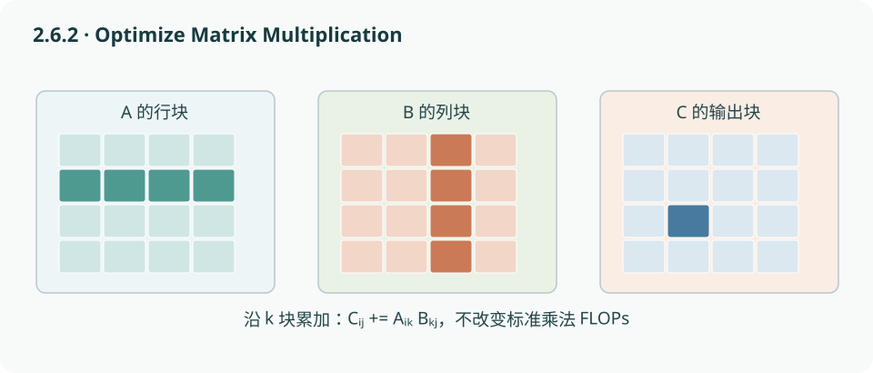

CHAPTER 02 · LINEAR EQUATION SOLVING
分块矩阵乘法：为什么不改变乘法次数也可能明显变快
从循环访问顺序、缓存工作集、微内核和块复用构造一条可测试的优化路线。
矩阵乘法 C=AB 的每个 Cᵢⱼ 都是 A 的第 i 行与 B 的第 j 列的点积。朴素 i-j-k 循环与分块实现具有相同的数学结果，但访问数据的次序不同。现代机器从 DRAM 取数据的代价远高于寄存器中的乘加；正确的分块是在有限的快速存储中反复使用刚载入的数据。
朴素三重循环和分块算法都做 O(n³) 运算，差别究竟在哪里？

循环交换不是改变数学，而是改变空间局部性
朴素 i-j-k 循环每次内层读取 Aᵢₖ 和 Bₖⱼ。对于 C 行主序 NumPy 内存，固定 j 而遍历 k 会跨行访问 B，可能造成较差局部性。换成 i-k-j 时，B 的一行可被连续访问，C 的一行也能重用；但浮点求和顺序改变可能引起微小的舍入差异。
循环顺序的最佳选择还取决于布局、内存层次和编译器。不能简单断言一种六重分块循环在所有矩阵和 CPU 上最快。
分块的代数恒等式保证结果正确
将 A 按行列划分为 Aᵢₖ，B 划分为 Bₖⱼ，则 Cᵢⱼ=Σₖ AᵢₖBₖⱼ。对每个输出小块，迭代不同 k 块并累加，使 A 与 B 的小块在局部存储中得到多次使用。
当块边长为 b 时，一个 b×b 的输出块更新约执行 2b³ 次浮点运算，而读入两个 b×b 乘数块只需 O(b²) 数据。这解释了块内运算密度随 b 增大，但输出块、缓存容量、寄存器数和打包开销会限制 b 的选择。
为什么需要面板打包与微内核
高性能 GEMM 通常不仅切分矩阵，还会把 B 面板等数据打包成连续布局，再用针对 SIMD 寄存器的微内核处理若干行列。打包有额外成本，但在足够大的矩阵上可由重复使用摊销。
小矩阵可能由于函数调用、打包和分块循环开销而没有收益。大矩阵中缓存冲突、线程数、NUMA 放置也会改变实际效果。
跨语言复现应比较数学正确性而非逐位一致
配套 Python 实现纯 NumPy 的教学三重分块循环，按 C[i:i+b,j:j+b] += A[i:i+b,k:k+b] @ B[k:k+b,j:j+b] 累加；它不是 BLIS 的寄存器级优化内核，也不应作为速度基准。测试用 np.allclose 对比 A@B，并覆盖 n 不能被 b 整除的尾块。
MATLAB 版使用相同分块恒等式和 1-based 索引；两种语言都把块范围裁剪到 n。若数据本身不连续或跨线程共享，还需额外考虑拷贝与数据争用。
交互实验：块大小影响复用而非 FLOPs
滑动块边长 b，示意图把 8×8 输出矩阵分成方块，并高亮一个待更新 Cᵢⱼ。数学上的标准 GEMM 运算次数约为 2n³，与 b 无关；块数、单块复用和附加调度成本则随 b 改变。
可视化只解释分块机制，不提供所谓“理论加速比”。实测性能必须在确定硬件、BLAS、线程数与数据布局之后独立基准化。
交互探索：朴素三重循环和分块算法都做 O(n³) 运算，差别究竟在哪里？
调整参数后，图形和数值将一起更新。下方是可重复计算的教学模型。
朴素 i-j-k 循环每次内层读取 Aᵢₖ 和 Bₖⱼ。对于 C 行主序 NumPy 内存，固定 j 而遍历 k 会跨行访问 B，可能造成较差局部性。换成 i-k-j 时，B 的一行可被连续访问，C 的一行也能重用；但浮点求和顺序改变可能引起微小的舍入差异。
图上的数字由浏览器根据给定模型计算；并非硬件计时结果。